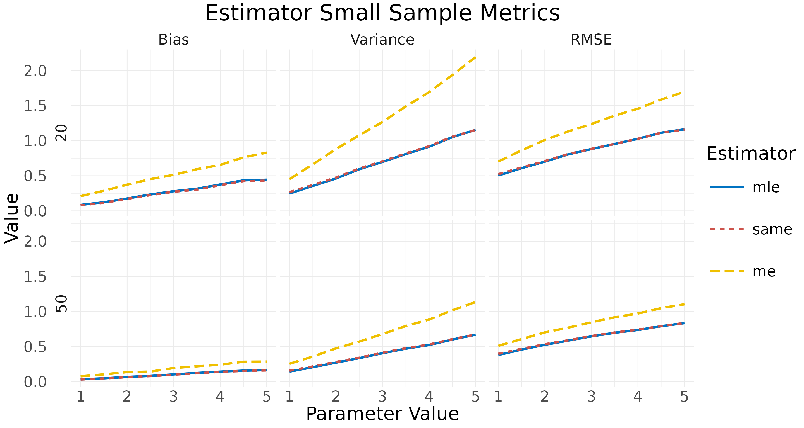
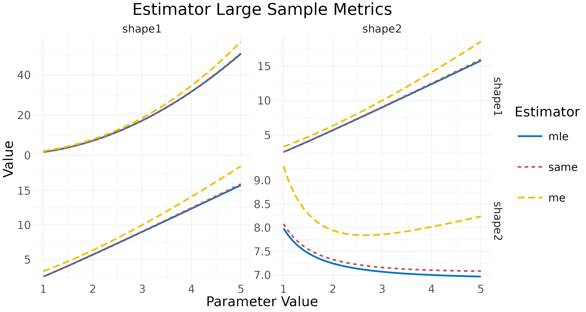

The estim package offers a few convenient functions for
parameter estimation in statistics. This guide provides an overview of
the package’s capabilities.
Distributions
The default stats package includes four functions for
each distribution.
shape1 <- 1
shape2 <- 2
dbeta(0.5, shape1, shape2)
#> [1] 1
pbeta(0.5, shape1, shape2)
#> [1] 0.75
qbeta(0.75, shape1, shape2)
#> [1] 0.5
rbeta(2, shape1, shape2)
#> [1] 0.2494058 0.3353119This package provides an equivalent system that works by defining a
Distribution object and implementing the four functions
generically.
Parameter Estimation
In order to illustrate the parameter estimation as implemented in the package, a random sample is generated from the Beta distribution.
Likelihood - The ll Functions
The package implements the ll functions that calculate
the log-likelihood. They are offered in two versions, the distribution
specific one (llbeta) and the S4 generic one
(ll).
It is important to note that the S4 methods also accept a character for the distribution. The name should be the same as the S4 distribution generator, case ignored (i.e. “Beta” or “beta”).
Point Estimation
Point estimation functions are also offered in two versions, the
distribution specific one (ebeta) and the S4 generic one
(mle, me, and same). In the first
case, the type argument can be used to specify the
estimator type.
ebeta(x, type = "mle")
#> shape1 shape2
#> 1.066968 2.466715
ebeta(x, type = "me")
#> shape1 shape2
#> 1.074511 2.469756
ebeta(x, type = "same")
#> shape1 shape2
#> 1.067768 2.454257
mle(x, D)
#> shape1 shape2
#> 1.066968 2.466715
me(x, D)
#> shape1 shape2
#> 1.074511 2.469756
same(x, D)
#> shape1 shape2
#> 1.067768 2.454257A general function estim is implemented, covering all
distributions and estimators.
estim(x, D, type = "mle")
#> shape1 shape2
#> 1.066968 2.466715Again, the S4 methods also accept a character for the distribution, case ignored.
Asymptotic Variance
The asymptotic variance (or variance - covariance matrix) of the
estimators are also covered in the package. As with point estimation,
the implementation is twofold, distribution specific
(vbeta) and S4 generic (avar_mle,
avar_me, and avar_same). In the first case,
the type argument can be used to specify the estimator
type.
vbeta(shape1, shape2, type = "mle")
#> shape1 shape2
#> shape1 1.597168 2.523104
#> shape2 2.523104 7.985838
vbeta(shape1, shape2, type = "me")
#> shape1 shape2
#> shape1 2.1 3.3
#> shape2 3.3 9.3
vbeta(shape1, shape2, type = "same")
#> shape1 shape2
#> shape1 1.644934 2.539868
#> shape2 2.539868 8.079736
avar_mle(D)
#> shape1 shape2
#> shape1 1.597168 2.523104
#> shape2 2.523104 7.985838
avar_me(D)
#> shape1 shape2
#> shape1 2.1 3.3
#> shape2 3.3 9.3
avar_same(D)
#> shape1 shape2
#> shape1 1.644934 2.539868
#> shape2 2.539868 8.079736The general function avar covers all distributions and
estimators.
avar(D, type = "mle")
#> shape1 shape2
#> shape1 1.597168 2.523104
#> shape2 2.523104 7.985838Estimator Metrics
The estimators can be compared based on both finite sample and
asymptotic properties. The package includes the functions
small_metrics and large_metrics, where small
and large refers to the “small sample” and “large sample” terms that are
often used for the two cases. The first one estimates the bias, variance
and rmse of the estimator with Monte Carlo simulations, while the latter
calculates the asymptotic variance - covariance matrix. The resulting
data frames can be plotted with the functions
plot_small_metrics and plot_large_metrics,
respectively.
The functions get a distribution object and a parameter
list that specifies which parameter should change and how. The metric of
interest is evaluated as a function of this parameter. Specifically,
prm includes three elements named “name”, “pos”, and “val”.
The first two elements determine the exact parameter that changes, while
the third one is a numeric vector holding the values it takes. For
example, in the case of the Multivariate Gamma distribution,
D <- MGamma(shape = c(1, 2), scale = 3) and
prm <- list(name = "shape", pos = 2, val = seq(1, 1.5, by = 0.1))
means that the evaluation will be performed for the MGamma distributions
with shape parameters (1, 1), (1, 1.1), …,
(1, 1.5) and scale 3. Notice that the initial
shape parameter 2 in D is not utilized in the
function.
The following example concerns the small sample metrics for the Dirichlet distribution estimators.
D1 <- Dir(alpha = 1:4)
prm <- list(name = "alpha",
pos = 1,
val = seq(1, 5, by = 0.5))
x <- small_metrics(D1, prm,
obs = c(20, 50),
est = c("mle", "same", "me"),
sam = 5e3,
seed = 1)
head(x)
#> Parameter Observations Estimator Metric Value
#> 1 1.0 20 mle Bias 0.08519707
#> 2 1.5 20 mle Bias 0.12316661
#> 3 2.0 20 mle Bias 0.17621876
#> 4 2.5 20 mle Bias 0.23387116
#> 5 3.0 20 mle Bias 0.28023115
#> 6 3.5 20 mle Bias 0.31595265
plot_small_metrics(x)
The following example concerns the large sample metrics for the Beta distribution estimators.
prm <- list(name = "shape1",
pos = NULL,
val = seq(1, 5, by = 0.1))
x <- large_metrics(D, prm,
est = c("mle", "same", "me"))
head(x)
#> Row Col Parameter Estimator Value
#> 1 shape1 shape1 1.0 mle 1.597168
#> 2 shape2 shape1 1.0 mle 2.523104
#> 3 shape1 shape2 1.0 mle 2.523104
#> 4 shape2 shape2 1.0 mle 7.985838
#> 5 shape1 shape1 1.1 mle 1.969699
#> 6 shape2 shape1 1.1 mle 2.826906
plot_large_metrics(x)